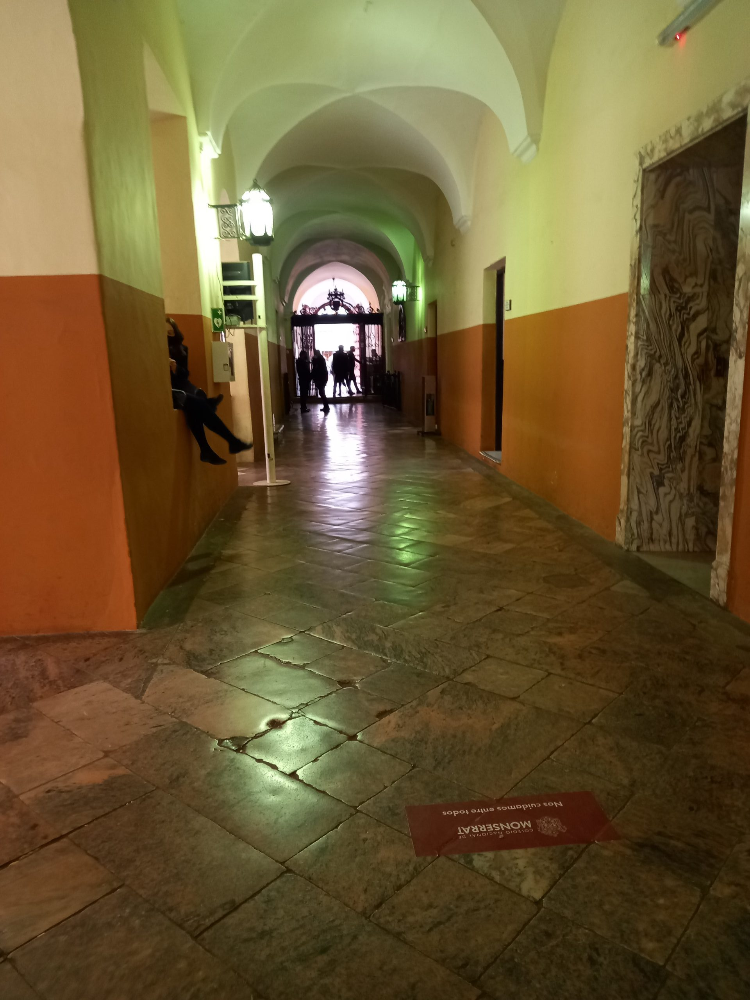

La creación de la Asociación Monserratense después de más de tres siglos de vida del Colegio puede parecer tardía. El Monse generó muchas agrupaciones informales de egresados, promovidas en general por grupos de compañeros de promoción. Pero nunca hubo una asociación que nucleara a todos los egresados del Colegio, desde sus remotos orígenes, ni tampoco se diera forma a una "Red de Exalumnos" como sucede en las demás instituciones educativas.
Frases como "ya no estamos dentro del Monse, ya pasó, hay que mirar para adelante" son comunes en el imaginario de los egresados. Pero no caemos en la cuenta de que la enorme reputación que tiene el Colegio Nacional de Monserrat en el mundo académico, su condición de cuna de próceres de la Nación y de la Provincia, de semillero de figuras destacadas en todas las artes y ciencias, es también nuestra reputación: somos sus herederos. Tenemos la obligación moral de cuidar ese patrimonio y de hacerlo crecer.
A partir de su legado histórico, compartimos una identidad y una cosmovisión que nos une. Somos lo que somos gracias a lo que el Monse nos dio. Y esa identidad común es la raíz que funda esta asociación.

Esta entidad nace con el afán de reunir a todos los egresados del Colegio Nacional de Monserrat, sin distinción de épocas ni de promociones, con el objetivo de promover los valores que nos inculcaron, de mantener vivo el espíritu del Monse, de relacionarnos entre nosotros, de aprovechar nuestras habilidades y de contribuir a la sociedad.
Sería interesante que la "casa de los monserratenses" se convirtiera en un lugar de encuentro donde los egresados del Colegio pudiéramos seguir aprendiendo los unos de los otros, donde pudiéramos seguir debatiendo, donde pudiéramos seguir construyendo juntos una visión del mundo y del país que nos pertenece y que nos une.
Es indudable que la formación que nos brindó el Colegio, en la que el conocimiento clásico y el humanismo tuvieron un lugar central, nos dejó una impronta imborrable. Nos dio una manera de pensar, una manera de ver el mundo. Esa es nuestra riqueza y nuestra responsabilidad.
Este es nuestro objetivo: brindarles un espacio en el que puedan reencontrarse con sus compañeros de siempre, conocer a egresados de otras generaciones, y en el que todos juntos podamos hacerle honor a la institución que nos formó.